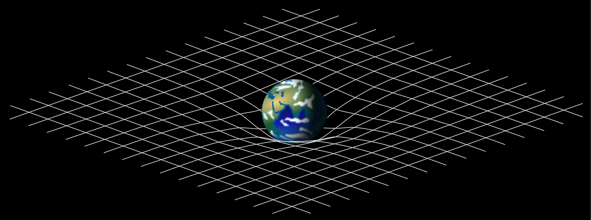
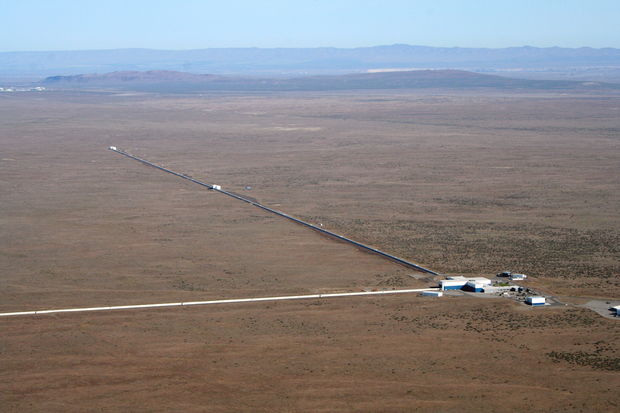
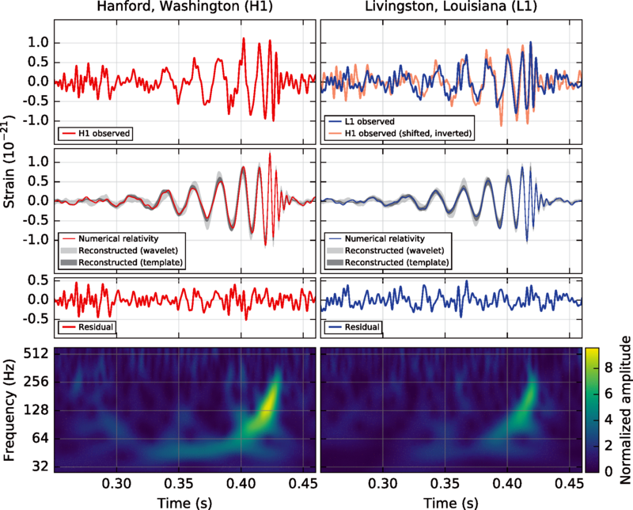
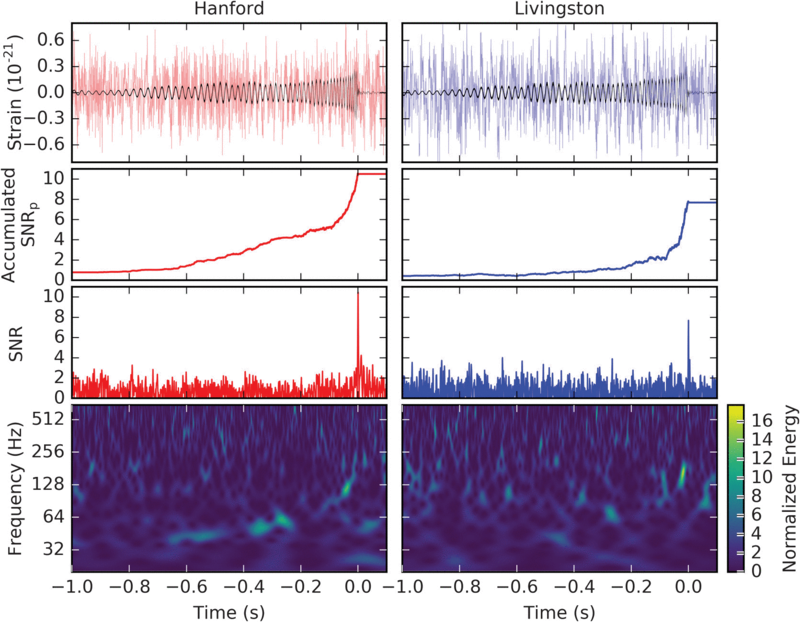
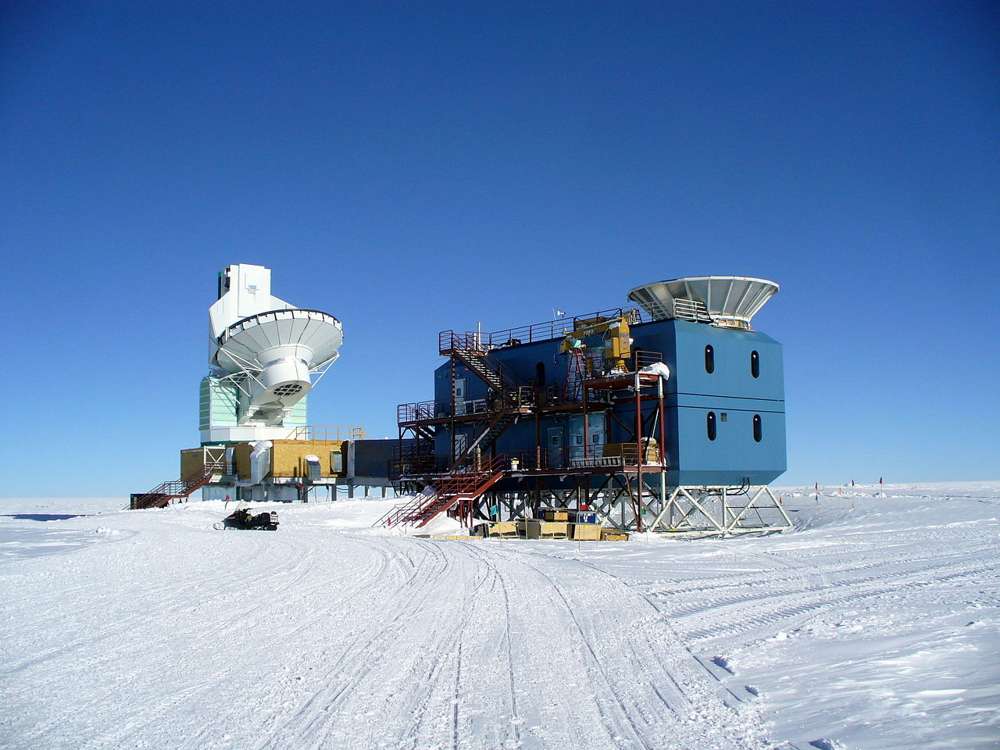
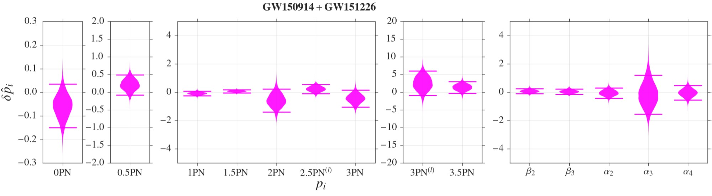

Gravitational Wave Astronomy
Benjamin Gill
Why am I interested in this? STEM??? Agenda:
why do we want to observe them?
what are they?
how are we doing it?
what have we found?
what's the future?
History of astronomy.
Started with Babylonians. Looking at light produced by things that glow. See many things (X-ray, gamma, CMB). We can't see thing that don't produce light, though - which is where gravitation waves are useful.

What are gravitational waves?
Stuff has mass; mass influences spacetime - spacetime tells mass how to move. Ripples like raindrop when mass changes.
The sound of an inspiral
Mass fixed, so get real grav. waves from accelerating masses (c.f. EM), e.g. BH inspiral caused by energy radiating in the form of G.W., which is how we know they MUST exist.

Interferometer measures 4 km arms to measure movement of < 1 proton width
FP means the equivalent of 112 km long 'conventional' interferometer. - see (e)LISA.


GW150914 + GW151226
DETECTIONS!!!
Both binary BH inspirals, both 5 sigma (1/200 000 yr spurious event rate), both detected by both labs. 14-Sep-2015 and 26-Dec-2015. Masses of ~40 Ms and ~5 Ms.
Look at the relative speeds!

False detection from pulsar timing array - actually just dust (probably(?))
First detection of a neutron star merger - simultaneous gamma ray burst, also observed in UV and visual light.
This told us that neutron star mergers are the main source of heavy elements in the universe.

We've been able to test GR in strong gravity conditions that were previously inaccessible to us.
Detection of a population of black holes 10-100s of Ms
Everything consistent with GR, unfortunately
Questions?
Bailes, M., Berger, B.K., Brady, P.R. et al. Gravitational-wave physics and astronomy in the 2020s and 2030s. Nat Rev Phys 3, 344–366 (2021). https://doi.org/10.1038/s42254-021-00303-8
https://iopscience.iop.org/journal/2041-8205/page/Focus_on_GW170817
B. P. Abbott et al 2017 ApJL 848 L13